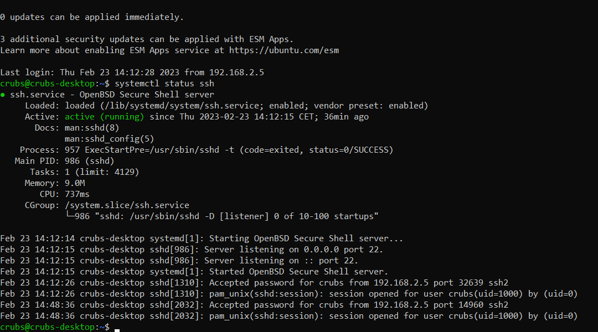

3.4.1. Introduction¶
Nous prévoyons d’utiliser ROS2, nous avons donc besoin de Ubuntu 22.04 LTS arm64. Utilisation de Pi4 4Go.
3.4.2. Mises a jour¶
Je recommande d’utiliser le terminal pour ces premières étapes.
Commencons par mettre à jour la Pi.
cd
sudo apt update
sudo apt-get update
sudo apt upgrade
sudo apt-get upgrade
Ensuite, il va falloir installer le service de ssh.
sudo apt-get install openssh-client
sudo apt-get install openssh-server
sudo systemctl enable ssh
sudo systemctl start ssh
sudo systemctl status ssh
Vérifions que le service ssh s’est bien installé, vous devriez le voir actif comme ci-dessous.
{kind=link}
3.4.3. Hotspot WIFI et IP fixes¶
Nous allons maintenant configurer un hotspot wifi afin de se connecter sur la Pi en ssh et de permettre aux robot et balises de communiquer sur un même réseau.
Installons les outils de réseau qui ne sont pas encore présents après la mise à jour.
sudo apt install network-manager
sudo apt install wpasupplicant
sudo apt install ifupdown
Désactivation de cloud init.
sudo bash -c "echo 'network: {config: disabled}' > /etc/cloud/cloud.cfg.d/99-disable-network-config.cfg"
Nous allons maintenant modifier le fichier de configuration du réseau, nous en profiterons pour ajouter des IP fixes pour faciliter les accès en ssh avec ces dernières.
sudo nano /etc/netplan/*.yaml
Puis rentrer le texte suivant en prenant soin de modifier « yourssid » et « yourpassword » par le nom du réseau wifi et le mot de passe que vous voulez.
network:
version: 2
renderer: NetworkManager
ethernets:
eth0:
dhcp4: true
optional: true
addresses: [192.168.2.10/24]
wifis:
wlan0:
dhcp4: true
optional: true
addresses: [192.168.1.10/24]
access-points:
"yourssid":
password: "yourpassword"
mode: ap
Rappel : ctrl + x puis y pour quitter le fichier.
Désactivons l’IPv6 qui ne nous sera pas necessaire, dans le fichier suivant:
sudo nano /etc/sysctl.conf
Rajouter la ligne suivante à la fin du fichier :
net.ipv6.conf.all.disable_ipv6=1
Avant d’appliquer cette configuration, nous devons impérativement oublier tous les réseaux wifi sur lesquels la Pi s’est connectée. En effet, cette dernière ne peut pas émettre de réseau en meme temps qu’elle est connectée à un autre.
Une fois les wifi oubliés, nous pouvons maintenant appliquer notre configuration et redémarrer.
sudo sysctl -p
sudo netplan generate
sudo netplan apply
sudo reboot
Un reseau wifi devrait maintenant être disponible dès que la Pi aura redémarré.
{kind=link}
Noter que vous pourrez toujours connecter la Pi à un réseau wifi (par exemple pour l’installation de ROS2) mais cette dernière ne pourra pas émettre son réseau et il faudra penser à lui faire oublier la derniere connection wifi par sécurité.
3.4.3.1. Commandes utiles¶
Quelques commandes utiles concernant le wifi avec le terminal :
Désactivation et réactivation du hotspot.
nmcli radio wwan off
Lister les wifi disponibles.
nmcli dev wifi list
Se connecter à un wifi.
sudo nmcli dev wifi connect network-ssid password "network-password"
En remplaçant network-ssid par le nom du wifi présent dans la liste et « network-password » par le mot de passe (garder les « »)
Pour oublier un réseau, commencez par trouver vle réseau que vous voulez oublier dans la liste avec la commande suivante.
nmcli -t -f TYPE,UUID,NAME con
Vous devriez obtenir un résultat du genre : 802-11-wireless:12345678-31d1-51e7-a60e-3a52e52b4495:YourWifiName, copier la suite de chiffre et lettre pour l’ajouter dans la commande ci-dessous.
sudo nmcli c delete choosedUUID
Exemple : sudo nmcli c delete 12345678-31d1-51e7-a60e-3a52e52b4495
3.4.4. SSH¶
Pour se connecter en ssh il faut utiliser la commande suivante sur votre pc :
ssh utilisateur@addressip
À partir de ce que nous avons mis en place, nous avons donc :
3.4.4.1. wlan0¶
Sur l’interface wlan0 apres s’être connecté au réseau wifi emit par la Pi, rentrer la commande suivante dans un terminal.
ssh crubs@192.168.1.10
3.4.4.2. eth0¶
Sur l’interface eth0 après avoir connecté un câble éthernet :
Brancher le cable éthernet puis direction le panneau de contrôle Windows (touche Win puis rechercher panel). Réseau et Internet > Centre de résau et partage > Ethernet > Propriete > cocher puis double cliquer Protocole Internet version 4 (TCP/IPv4).


Renseigner maintenant une addresse IP sur le meme réseau. Ici par exemple 192.168.2.5 avec le même masque 255.255.255.0.
Je recommande vivement d’enlever ces changements dès la manipulation finie. En effet, vous risquez d’avoir de gros problèmes dès que vous vous connecterez à un autre réseau éthernet.
Enfin, vous pouvez retourner dans un terminal pour rentrer la commande suivante.
ssh crubs@192.168.2.10
3.4.4.3. Dépanage¶
L’erreur ci-dessous vous empêchant de vous connecter en ssh peut subvenir sur votre pc.

Rentrez simplement la commande suivante puis réessayez la connection ssh en acceptant le message avec y.
ssh-keygen -R 192.168.2.10
ssh-keygen -R 192.168.1.10
3.4.5. Fixer nom des ports USB¶
Afin de piloter le robot, deux cartes Arduino sont utilisées ce qui amène à un problème d’identification de ces dernières par les codes. En effet, au démarrage, la Pi attribue un nom de périphérique à chaque appareil en fonction de la vitesse de démarrage des cartes, ce qui est aléatoire. Nous devons donc faire en sorte d’attribuer un nom fixe en fonction de l’appareil connecté.
Commencez par débrancher tous les périphériques de la Pi et rallumez-la.
Pour tout cette série d’étapes, nous devons passer en super utilisateur.
sudo su -
Brancher une première carte puis identifier son nom actuel :
ls -l /dev/ttyACM*
uUne fois le port identifié, ici ttyACM1, nous devons récupérer les données de la carte.
udevadm info --name=/dev/ttyACM0 --attribute-walk
Repérer les premiers idProduct et idVendor et noter les.
Toujours en tant que super utilisateur nous devons créer une nouvelle règle.
cd etc/udev/rules.d/
sudo nano 10-usb-serial.rules
Ajouter la ligne suivante avec les paramètres idVendor et idProduct obtenus.
SUBSYSTEM=="tty", ATTRS{idVendor}=="2341", ATTRS{idProduct}=="0042", SYMLINK+="NouveauNom"
Vous pouvez appliquer la règle fraichement crée avec la commande suivante, mais je vous recommande de redémarrer quand-même.
sudo udevadm trigger
sudo reboot
Après redémarrage, vous pouvez vérifier de la manière suivante.
ls -l /dev/NouveauNom
Et vous devriez obtenir le résultat suivant.
Vous pouvez appliquer de nouveau la même methode en changeant la carte à nommer et en suivant les étapes précédentes.
Tuto suivis : https://dominoc925.blogspot.com/2019/11/fix-usb-serial-adapters-to-static.html
3.4.6. ROS2 au démarrage¶
Afin de lancer le middleware ROS2 au démarrage de la Pi, il est nécessaire d’écrire plusieurs fichiers :
On commence par créer un executable comportant les commandes à executer pour démarrer le robot.
sudo nano /usr/bin/ros2_launch_script.sh
Puis on y ajoute les lignes suivantes :
#!/bin/bash
source /opt/ros/humble/setup.bash
source /home/crubs/Documents/Robot2/install/setup.bash
ros2 launch ldlidar_stl_ros2 ld06.launch.py & ros2 launch robot_bringup lancement.launch.py
Notez qu’ici on lance le launch lancement.launch.py et ld06.launch.py, cette ligne est à adapter selon les besoins.
Enfin on crée un service nommé « ros2_launch » qui lancera le précédent executable crée.
sudo nano /etc/systemd/system/ros2_launch.service
Et on y ajoute les lignes suivantes :
[Unit]
Description=ROS2 Launch Service
After=network.target
[Service]
ExecStart=/usr/bin/ros2_launch_script.sh
User=crubs
Group=crubs
[Install]
WantedBy=multi-user.target